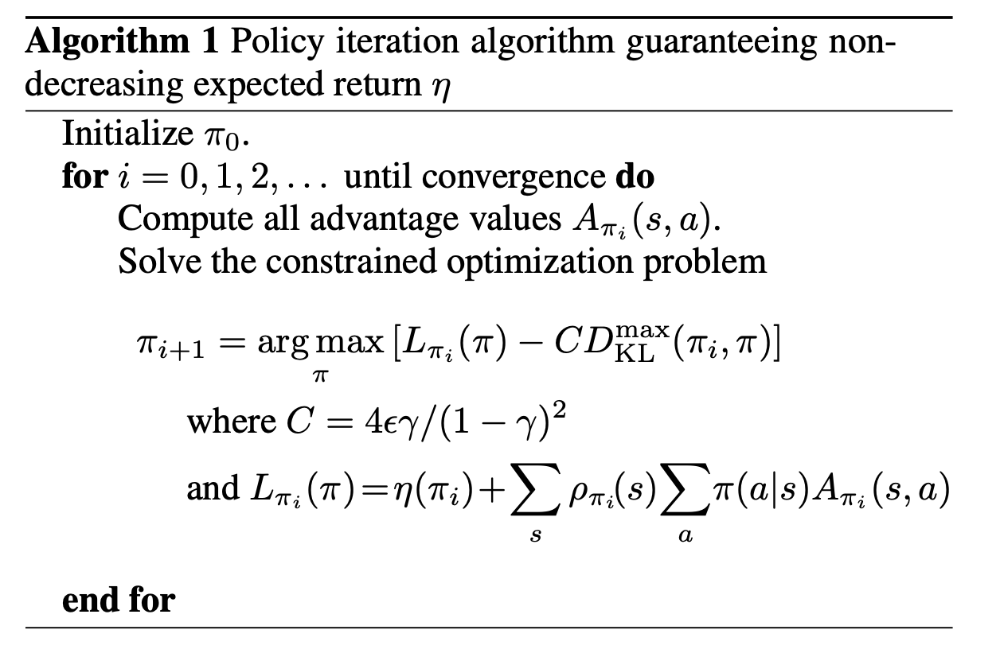
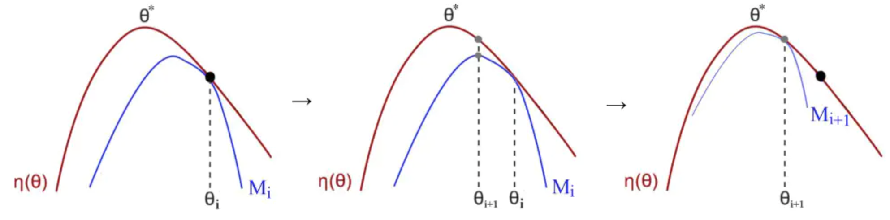
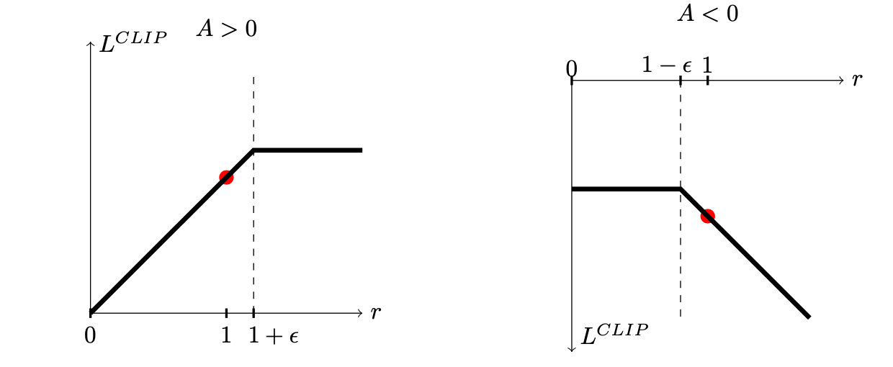

论文：
[1] Schulman, J., Levine, S., Moritz, P., Jordan, M. I. & Abbeel, P. Trust Region Policy Optimization. arXiv:1502.05477 [cs] (2017).
[2] Schulman, J., Wolski, F., Dhariwal, P., Radford, A. & Klimov, O. Proximal Policy Optimization Algorithms. arXiv:1707.06347 [cs] (2017).
[3] Heess, N. et al. Emergence of Locomotion Behaviours in Rich Environments. arXiv:1707.02286 [cs] (2017).
第一、二篇是openai的，第三篇是deepmind的
Trust Region Policy Optimization算法是在2015年由UCB/Openai的John Schulman提出的，基本思想就是在传统的Policy Gradient算法中对梯度的更新增加一个信赖域，来保证梯度更新前后的策略相差不超过一定的阈值，用两个概率分布的KL散度来衡量这个阈值，TRPO算法的表达形式中有一个硬约束，这给求解最优问题带来了困难，而PPO则是在2017年由UCB/Openai的John Schulman提出的，是TRPO的近似算法，将TRPO的软约束转化成目标函数中的一个惩罚项，以此来简化计算，方便实现。
TRPO算法推导
Notation
令\(\eta(\pi)\)表示累积折扣回报：
\(\eta(\pi)=\mathbb{E}_{s_{0}, a_{0}, \ldots}\left[\sum_{t=0}^{\infty} \gamma^{t} c\left(s_{t}\right)\right]\)
其中，\(s_{0} \sim \rho_{0}\left(s_{0}\right), a_{t} \sim \pi\left(a_{t} \mid s_{t}\right), s_{t+1} \sim P\left(s_{t+1} \mid s_{t}, a_{t}\right)\)
state-action值函数的定义：\(Q_{\pi}\left(s_{t}, a_{t}\right)=\mathbb{E}_{s_{t+1}, a_{t+1}, \ldots}\left[\sum_{l=0}^{\infty} \gamma^{l} r\left(s_{t+l}\right)\right]\)
价值函数的定义：\(V_{\pi}\left(s_{t}\right)=\mathbb{E}_{a_{t}, s_{t+1}, \ldots}\left[\sum_{l=0}^{\infty} \gamma^{l} r\left(s_{t+l}\right)\right]\)
优势函数：\(A_{\pi}(s, a)=Q_{\pi}(s, a)-V_{\pi}(s)\)
Lemma1：策略差分定理：原始策略记为\(\pi\)，更新后的策略记为\(\tilde{\pi}\)，则更新后的策略的期望折扣回报可以写成更新前策略的期望折扣回报加上一个\(\tilde{\pi}\)对\(\pi\)的优势函数：
\(\eta(\tilde{\pi})=\eta(\pi)+\mathbb{E}_{s_{0}, a_{0}, s_{1}, a_{1}, \ldots}\left[\sum_{t=0}^{\infty} \gamma^{t} A_{\pi}\left(s_{t}, a_{t}\right)\right]\)
上述等式能够体现TRPO的思想：将新的策略得到的性能函数写成旧策略的性能函数加上一个新策略对旧策略的的优势函数的期望值，若能保证这个期望值是正数，则可以保证新策略的性能函数要优于旧策略的性能函数。
这个定理由2002年 Kakade & Langford证得：
因为\(A_{\pi}(s, a)=\mathbb{E}_{s^{\prime} \sim P\left(s^{\prime} \mid s, a\right)}\left[r(s)+\gamma V_{\pi}\left(s^{\prime}\right)-V_{\pi}(s)\right]\)
\(\begin{array}{l} \mathbb{E}_{\tau \mid \tilde{\pi}}\left[\sum_{t=0}^{\infty} \gamma^{t} A_{\pi}\left(s_{t}, a_{t}\right)\right] \\ =\mathbb{E}_{\tau \mid \tilde{\pi}}\left[\sum_{t=0}^{\infty} \gamma^{t}\left(r\left(s_{t}\right)+\gamma V_{\pi}\left(s_{t+1}\right)-V_{\pi}\left(s_{t}\right)\right)\right] \\ =\mathbb{E}_{\tau \mid \tilde{\pi}}\left[-V_{\pi}\left(s_{0}\right)+\sum_{t=0}^{\infty} \gamma^{t} r\left(s_{t}\right)\right] \\ =-\mathbb{E}_{s_{0}}\left[V_{\pi}\left(s_{0}\right)\right]+\mathbb{E}_{\tau \mid \tilde{\pi}}\left[\sum_{t=0}^{\infty} \gamma^{t} r\left(s_{t}\right)\right] \\ =-\eta(\pi)+\eta(\tilde{\pi}) \end{array}\)
定义discounted visitation frequencies：\(\rho_{\pi}(s)=\left(P\left(s_{0}=s\right)+\gamma P\left(s_{1}=s\right)+\gamma^{2} P\left(s_{2}=s\right)+\ldots\right)\)
定义这个频率的目的主要是换一个角度来表示基于累计折扣回报函数的性能函数，因为\(\mathbb{E}_{s_{0}, a_{0}, s_{1}, a_{1}, \ldots}\left[\sum_{t=0}^{\infty} \gamma^{t} A_{\pi}\left(s_{t}, a_{t}\right)\right]\)很难表示。
当\(\gamma\)等于1的时候，显然，这个频率代表着在一个trajectory中状态\(s\)出现次数的期望，当reward function只和状态有关而和action无关的时候，那么在这个trajectory中由\(s\)贡献的return就只和这个frequency相关了。
当\(\gamma\)小于1的时候，在每个timestep会对reward进行一个discount的处理，所以想使用discounted frequencies来表示return的期望的话，需要在frequency上面做一个discount。
通过使用discounted visitation frequencies方法，可以将上述级数形式的期望写成如下容易处理的形式
\[\begin{aligned} \eta(\tilde{\pi}) &=\eta(\pi)+\sum_{t=0}^{\infty} \sum_{s} P\left(s_{t}=s \mid \tilde{\pi}\right) \sum_{a} \tilde{\pi}(a \mid s) \gamma^{t} A_{\pi}(s, a) \\ &=\eta(\pi)+\sum_{s} \sum_{t=0}^{\infty} \gamma^{t} P\left(s_{t}=s \mid \tilde{\pi}\right) \sum_{a} \tilde{\pi}(a \mid s) A_{\pi}(s, a) \\ &=\eta(\pi)+\sum_{s} \rho_{\tilde{\pi}}(s) \sum_{a} \tilde{\pi}(a \mid s) A_{\pi}(s, a) \end{aligned}\]
\(\eta(\tilde{\pi})=\eta(\pi)+\sum_{s} \rho_{\tilde{\pi}}(s) \sum_{a} \tilde{\pi}(a \mid s) A_{\pi}(s, a)\)
因为\(\rho_{\tilde{\pi}}\)依赖于\(\tilde{\pi}\)，而因为\(\tilde{\pi}\)是更新后的策略，在\(t\)时刻，我们只有更新前的策略，上述优化问题很难求解，所以需要做一个近似：
\(L_{\pi}(\tilde{\pi})=\eta(\pi)+\sum_{s} \rho_{\pi}(s) \sum_{a} \tilde{\pi}(a \mid s) A_{\pi}(s, a)\)
其中，\(L_{\pi}(\tilde{\pi})\)使用的是\(\rho_{\pi}\)而不是\(\rho_{\tilde{\pi}}\)，因为策略的改变会导致相应的state visitation density的变化，而上面这个式子忽略了这一点，但是，(Kakade & Langford 2002)证明了\(L_{\pi}(\tilde{\pi})\)和\(\eta(\pi)\)是一阶近似的：
对于任意的参数\(\theta_0\)，有：
\(\begin{aligned} L_{\pi_{\theta_{0}}}\left(\pi_{\theta_{0}}\right) &=\eta\left(\pi_{\theta_{0}}\right) \\ \left.\nabla_{\theta} L_{\pi_{\theta_{0}}}\left(\pi_{\theta}\right)\right|_{\theta=\theta_{0}} &=\left.\nabla_{\theta} \eta\left(\pi_{\theta}\right)\right|_{\theta=\theta_{0}} \end{aligned}\)
因此，当对策略进行一步充分小的更新，\(\pi_{\theta_{0}} \rightarrow \tilde{\pi}\)，改进\(L_{\pi_{\theta_{0}}}\)的同时，也能改进\(\eta(\pi_{\theta_{0}})\)
上述过程只说明了一个充分的改进会得到非减的性能指标序列，但是选取步长很重要，选的小了会导致收敛速度慢，选了大了会导致可能的不能得到非减的性能指标序列，因此，(Kakade & Langford)提出了一个policy update的方法：conservative policy iteration(保守策略迭代)，该方法给出了一个显式策略更新的下界：
令\(\pi_{old}\)为当前的策略，\(\pi^{\prime}=\arg \max _{\pi^{\prime}} L_{\pi_{\mathrm{old}}}\left(\pi^{\prime}\right)\)，新的策略为\(\pi_{new}\)，定义为：
\[\pi_{\mathrm{new}}(a \mid s)=(1-\alpha) \pi_{\mathrm{old}}(a \mid s)+\alpha \pi^{\prime}(a \mid s)\]
(Kakade & Langford)推导出来的期望折扣累计回报的下界是：
\(\begin{aligned} \eta\left(\pi_{\text {new }}\right) & \geq L_{\pi_{\text {old}}}\left(\pi_{\text {new}}\right)-\frac{2 \epsilon \gamma}{(1-\gamma)^{2}} \alpha^{2} \\ & \text { where } \epsilon=\max _{s}\left|\mathbb{E}_{a \sim \pi^{\prime}(a \mid s)}\left[A_{\pi}(s, a)\right]\right| \end{aligned}\)
以上都是(Kakade & Langford 2002)的结论和证明
其中\(\alpha\)并未给出合适的计算方法，TRPO利用两个概率分布之间的KL散度来计算这个\(\alpha\)
用概率论中的全变差距离来衡量两个策略之间的差距，\(D_{T V}(p \| q)=\frac{1}{2} \sum_{i}\left|p_{i}-q_{i}\right|\)
其中，\(p_i\)和\(q_i\)是两个策略的离散的概率分布，定义\(D_{\mathrm{TV}}^{\max }(\pi, \tilde{\pi})\)为：
\[D_{\mathrm{TV}}^{\max }(\pi, \tilde{\pi})=\max _{s} D_{T V}(\pi(\cdot \mid s) \| \tilde{\pi}(\cdot \mid s))\]
因为全变差距离和KL散度具有关系：\(D_{T V}(p \| q)^{2} \leq D_{\mathrm{KL}}(p \| q)\)
所以可以将\(\alpha^2\)替换为\(D_{T V}(p \| q)^{2}\)，进一步可以替换为\(D_{\mathrm{KL}}(p \| q)\)
利用KL divergence来衡量差距，计算方法：
对于离散分布：\(D_{K L}(P \mid Q)=\sum_{i} P(i) \log \frac{P(i)}{Q(i)}\)
对于连续分布：\(D_{K L}(P \mid Q)=\int_{-\infty}^{\infty} p(x) \log \frac{p(x)}{q(x)} d x\)
TRPO算法

策略的单调改进：TRPO算法能够保证策略每次更新都是单调改进的，即值函数\(\eta\left(\pi_{0}\right) \leq \eta\left(\pi_{1}\right) \leq \eta\left(\pi_{2}\right) \leq \ldots\)

PPO算法
TRPO算法是找到原目标函数的替代函数，并最大化这个替代函数，优化问题的约束是策略参数的更新不能超过一个设定的阈值，优化过程可以写成：
\(\begin{array}{ll} \underset{\theta}{\operatorname{maximize}} & \hat{\mathbb{E}}_{t}\left[\frac{\pi_{\theta}\left(a_{t} \mid s_{t}\right)}{\pi_{\theta_{\text {old }}}\left(a_{t} \mid s_{t}\right)} \hat{A}_{t}\right] \\ \text { subject to } & \hat{\mathbb{E}}_{t}\left[\operatorname{KL}\left[\pi_{\theta_{\text {old }}}\left(\cdot \mid s_{t}\right), \pi_{\theta}\left(\cdot \mid s_{t}\right)\right]\right] \leq \delta \end{array}\)
PPO是TRPO的一个改进，或者可以说是一个近似算法，可以将上述的带约束优化问题转化为无约束优化问题，可以写出TRPO的另一个形式：
\(\underset{\theta}{\operatorname{maximize}} \hat{\mathbb{E}}_{t}\left[\frac{\pi_{\theta}\left(a_{t} \mid s_{t}\right)}{\pi_{\theta_{\text {old }}}\left(a_{t} \mid s_{t}\right)} \hat{A}_{t}-\beta \mathrm{KL}\left[\pi_{\theta_{\text {old }}}\left(\cdot \mid s_{t}\right), \pi_{\theta}\left(\cdot \mid s_{t}\right)\right]\right]\)
令\(r_t(\theta)\)表示概率比：\(r_{t}(\theta)=\frac{\pi_{\theta}\left(a_{t} \mid s_{t}\right)}{\pi_{\theta_{\mathrm{old}}}\left(a_{t} \mid s_{t}\right)}\)，因此\(r(\theta){old}=1\)，
TRPO最大化一个替代的目标函数：
\(L^{C P I}(\theta)=\hat{\mathbb{E}}_{t}\left[\frac{\pi_{\theta}\left(a_{t} \mid s_{t}\right)}{\pi_{\theta_{\text {old }}}\left(a_{t} \mid s_{t}\right)} \hat{A}_{t}\right]=\hat{\mathbb{E}}_{t}\left[r_{t}(\theta) \hat{A}_{t}\right]\)
如果使用策略迭代进行求解，那么策略的更新的步长可能会很大，以下是PPO的一个实现：对ration直接进行限制
\(L^{C L I P}(\theta)=\hat{\mathbb{E}}_{t}\left[\min \left(r_{t}(\theta) \hat{A}_{t}, \operatorname{clip}\left(r_{t}(\theta), 1-\epsilon, 1+\epsilon\right) \hat{A}_{t}\right)\right]\)
上述min中有两项：第一项为\(r_{t}(\theta) \hat{A}_{t}\)，第二项为\(\operatorname{clip}\left(r_{t}(\theta), 1-\epsilon, 1+\epsilon\right) \hat{A}_{t}\)
Clip：为目标函数限定一个范围，意思就是通过计算概率比\(r_t(\theta)\)，设定一个阈值，将其限制在一定的范围内\((1-\epsilon, 1+\epsilon)\)，来避免策略网络的权重更新步长过大。
\(L^{CLIP}\)是\(L^{CPI}\)的一个下界。

PPO算法的第二种形式：
以目标函数加入惩罚项的形式：
\(L^{K L P E N}(\theta)=\hat{\mathbb{E}}_{t}\left[\frac{\pi_{\theta}\left(a_{t} \mid s_{t}\right)}{\pi_{\theta_{\text {old }}}\left(a_{t} \mid s_{t}\right)} \hat{A}_{t}-\beta \mathrm{KL}\left[\pi_{\theta_{\text {old }}}\left(\cdot \mid s_{t}\right), \pi_{\theta}\left(\cdot \mid s_{t}\right)\right]\right]\)
其中，\(\beta\)不是固定的，需要进行自适应设计，设计方法如下：
计算两个策略的KL散度：\(d=\hat{\mathbb{E}}_{t}\left[\operatorname{KL}\left[\pi_{\theta_{\text {old }}}\left(\cdot \mid s_{t}\right), \pi_{\theta}\left(\cdot \mid s_{t}\right)\right]\right]\)
\(\begin{array}{l} -\text { If } d<d_{\operatorname{targ}} / 1.5, \beta \leftarrow \beta / 2 \\ -\text { If } d>d_{\text {targ }} \times 1.5, \beta \leftarrow \beta \times 2 \end{array}\)